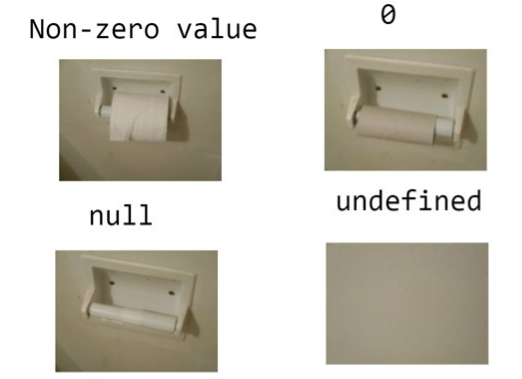

sql_101
Comandos básicos
O SQL possui 6 comandos básicos universais para consulta, em que o SQL tem a especificidade de ordem de escrita, que não coincide com a ordem de processamento
| # | Ordem de escrita | Ordem de processamento |
|---|---|---|
| 1 | SELECT | FROM |
| 2 | FROM | WHERE |
| 3 | WHERE | GROUP BY |
| 4 | GROUP BY | HAVING |
| 5 | HAVING | SELECT |
| 6 | ORDER BY | ORDER BY |
FROM
Descrição
O comando FROM é usado para especificar a tabela a partir das quais os dados serão selecionados em uma consulta SELECT.
Sintaxe/exemplo
SELECT *
FROM animais a
;No exemplo acima selecionamos todos os campos da tabela de nome animais
Observações
- Podemos criar um alias para tabela, ou seja, um nome de referência para tabela que pode ser utilizado para diferenciar quais campos pertencentes a quais tabelas, utilizados como prefixo seguido de um ponto, como veremos a seguir.
SELECT
Descrição
O comando SELECT é usado para selecionar dados de uma tabela, deve ser seguido pelo nome dos campos e/ou funções a serem selecionados.
Sintaxe/exemplo
SELECT a.id
FROM animais a
;No exemplo acima selecionamos o campo id de cada linha da tabela animal.
Observações
Caso queiramos seleciona todos os campos podemos usar o símbolo
*Podemos aplicar funções nos campos no
SELECTPodemos renomear os campos com o comando
AScomo vemos abaixo
SELECT a.id AS animal_id
FROM animais a
;WHERE
Descrição
O comando WHERE é usado para filtrar os resultados de uma consulta SELECT, retornando apenas as linhas que atendem a uma determinada condição.
Sintaxe/exemplo
SELECT *
FROM animais a
WHERE a.status = 1
;No exemplo acima selecionamos todos os registros cujo campo status seja igual a 1.
Operadores
Para aplicar condições no filtro precisamos usar operadores, os principais são:
Igualdade
A igualdade é dada pelo símbolo =
SELECT *
FROM animais a
WHERE a.status = 1
;No caso de texto temos que nos lembrar das aspas
SELECT r.id
FROM racas r
WHERE r.nome = 'Nelore'
;Diferente
O contrário da igualdade, pode variar com o SQL vamos normalmente é dado por != ou <>
SELECT r.id
FROM racas r
WHERE r.nome <> 'Nelore'
;Maior/menor
No caso de menor que:
SELECT *
FROM animais_peso ap
WHERE peso < 500
;No caso menor ou igual que
SELECT *
FROM animais_peso ap
WHERE peso <= 500
;No caso de maior que:
SELECT *
FROM animais_peso ap
WHERE peso > 500
;No caso maior ou igual que
SELECT *
FROM animais_peso ap
WHERE peso > 500
;AND e OR
Estes operadores permitem encadear múltiplos operadores, seja com condições concomitantes (AND) ou pelo menos uma delas (OR)
Imagine que queiramos o id das raças Nelore e Nelore Mocho:
SELECT r.id
FROM racas r
WHERE r.nome = 'Nelore' OR r.nome = 'Nelore Mocho'
;Neste caso aplicamos OR pois um animal não pode ter duas raças nesta tabela.
Agora imaginemos que queiramos as raças acimas, desde que estejam ativas, isto é, status = 1
SELECT r.id
FROM racas r
WHERE r.nome = 'Nelore' OR r.nome = 'Nelore Mocho' AND r.status = 1
;IN
No exemplo acima, vimos que precisamos repetir alguns comandos para igualar as raças, o operador IN tem como função filtrar os valores contidos em um vetor de valores.
SELECT r.id
FROM racas r
WHERE r.nome IN ('Nelore','Nelore Mocho')
;No exemplo acima colocamos entre parênteses as duas raças de interesse
LIKE
Porém quando tratamos de texto podemos ter casos em que não temos certeza dos termos integrais de interesse, desta forma o comando LIKE permite esta comparação parcial.
SELECT r.id
FROM racas r
WHERE r.nome LIKE 'Nelore%'
;No exemplo acima buscamos as raças que começam com 'Nelore' , a seguir veremos como usar o símbolo % aliado ao LIKE , considerando um campo de texto chamado Name
| LIKE | Descrição |
|---|---|
| WHERE Name LIKE ‘a%’ | Termos que começam com “a” |
| WHERE Name LIKE ‘%a’ | Termos que terminam com “a” |
| WHERE Name LIKE ‘%or%’ | Termos que contém “or” |
| WHERE Name LIKE ‘_r%’ | Termos que tem “r” na segunda posição |
| WHERE Name LIKE ‘a_%’ | Termos que começam com “a” e tem ao menos 2 caracteres |
| WHERE Name LIKE ‘a__%’ | Termos que começam com “a” e tem ao menos 3 caracteres |
| WHERE Name LIKE ‘a%o’ | Termos que começam com “a” e terminam com “o” |
NULL

Como podemos aplicar então?
SELECT *
FROM animais a
WHERE a.dt_nascimento IS NULL
;No exemplo acima selecionamos animais cuja data de nascimento está vazio.
Nota-se o uso também do operador IS , isto se dá pois para filtrar um valor nulo ao invés do operador de comparação igual (=) é que o valor nulo é um valor especial que não pode ser comparado diretamente com outros valores usando o operador de igualdade.
NOT
O operador NOT implica em negação, este pode ser utilizado para negar qualquer condição
SELECT *
FROM animais a
WHERE a.dt_nascimento IS NOT NULL
;No exemplo acima temos os animais cuja data de nascimento está preenchida.
SELECT r.id
FROM racas r
WHERE NOT(r.nome IN ('Nelore','Nelore Mocho'))
;No exemplo acima temos as raças que não Nelore e Nelore Mocho . Poderíamos também reescrever da seguinte forma:
SELECT r.id
FROM racas r
WHERE r.nome NOT IN ('Nelore','Nelore Mocho')
;GROUP BY
Descrição
O comando GROUP BY é usado para sumarizar os resultados de uma consulta SELECT com base em valores em uma ou mais colunas.
Funções de sumarização
Este tipo de função tem por natureza gerar um resultado cujo tamanho seja inferior aos dados originais, por exemplo, se eu tiver 10 valores e aplicar uma média terei 1 valor como resultante
Contagem
Talvez a função mais famosa de sumarização seja a função de contagem, que conta o número de linhas, e é dada pelo comando COUNT
SELECT COUNT(*)
FROM animais a
;No exemplo acima contamos o número total de registros na tabela.
Valores distintos
Digamos que queiramos as raças distintas (únicas) presentes no cliente
SELECT DISTINCT(a.racas_id)
FROM animais a
;No exemplo acima retornaremos as raças únicas na tabela, sem considerar a quantidade.
Estatísticas básicas
Para aplicar funções básicas da estatísticas temos os seguintes comandos:
SUM()- Soma dos valoresAVG()- Média dos valoresMAX()- Valor máximoMIN()- Valor mínimo
Funções aninhadas
Podemos também combinar funções, digamos que queremos saber quantas raças o cliente possui
SELECT COUNT(DISTINCT(a.racas_id))
FROM animais a
;No exemplo acima temos o número de raças distintas presentes nos animais.
Sintaxe/exemplo
Entendendo as funções de sumarização vamos agora aplicar estas funções por uma ou mais variáveis.
SELECT a.status,COUNT(*)
FROM animais a
GROUP BY a.status
;No exemplo acima contamos o número de linhas por status, ou seja, temos o número de animais para cada status, importante notar que o campo se repete tanto SELECT quanto no GROUP BY, o motivo é que ao existir no SELECT este dá visibilidade para saber o que cada contagem remete.
HAVING
Descrição
O comando HAVING é usado em conjunto com o comando GROUP BY para filtrar os resultados agrupados com base em uma condição.
Ou seja, é um WHERE para funções de sumarização quando uso GROUP BY
Sintaxe/exemplo
Digamos que queira saber quantos registros de animais existem por status, que possuem mais de 1.000 registros?
SELECT a.status,COUNT(*)
FROM animais a
GROUP BY a.status
HAVING COUNT(*) > 1000
;ORDER BY
Descrição
O comando ORDER BY é usado para ordenar os resultados de uma consulta SELECT em ordem crescente ou decrescente com base em uma ou mais colunas.
Sintaxe/exemplo
Vamos repetir o exemplo visto no comando HAVING, porém ordenando os valores pelo número do status de forma crescente
SELECT status,COUNT(*)
FROM animais a
GROUP BY status
HAVING COUNT(*) > 1000
ORDER BY status
;Por padrão o ORDER BY faz a ordenção por ordem crescente, porém podemos enunciar isto ao adicionar o comando ASC
SELECT status,COUNT(*)
FROM animais a
GROUP BY status
HAVING COUNT(*) > 1000
ORDER BY status ASC
;Caso desejemos a ordem decrescente
SELECT status,COUNT(*)
FROM animais a
GROUP BY status
HAVING COUNT(*) > 1000
ORDER BY status DESC
;Boas práticas
Comandos/funções em letras maiúsculas
Tabelas e campos em letras minúsculas
Quebrar linhas para cada comando básico
Quebrar linhas em casos de muitos campos ou com renomeação de campos
*Finalizar consultar com
;*Adicionar comentários
Iniciar a linha de comando com
--Colocar os comandos entre
/*e*/
*Estes pontos podem variar com o tipo de SQL